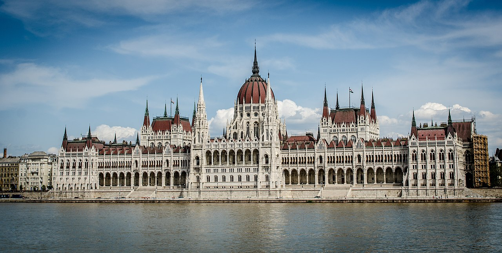
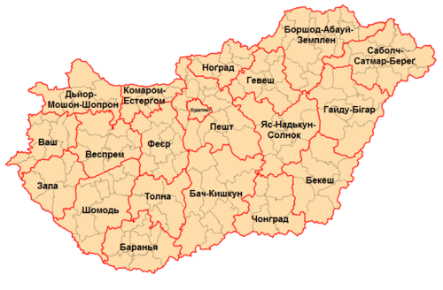

Угорщина
Угорщина — країна в Центральній Європі, яка має багату історію, культурну спадщину і унікальну природну красу.
Парламент Угорщини
Історія Угорщини
Угорщина має багату історію, що сягає кількох століть. Її заснували угорські племена в 896 році, після їх переселення на територію Карпатського басейну. Угорщина стала потужним королівством у Середньовіччі, але згодом зазнала османського та габсбурзького панування. У 1918 році після Першої світової війни країна втратила значні території, а в 1989 році завершила перехід до демократії після падіння комуністичного режиму.
Карта Угорщини
Культура Угорщини
Культура Угорщини багата і різноманітна, відображає її багатовікову історію та різні
впливи сусідніх народів. Угорці зберегли свою унікальну мову, угорську (мадярську), яка
не належить до індоєвропейської мовної групи. Угорщина славиться своєю
музичною спадщиною – від
народних мелодій до класичної музики.